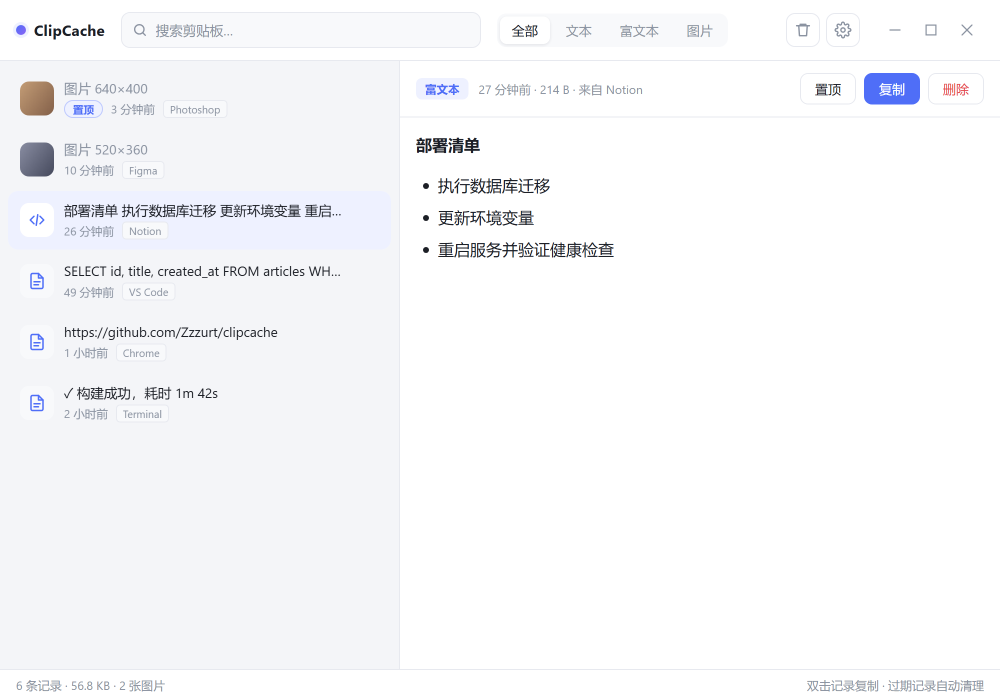
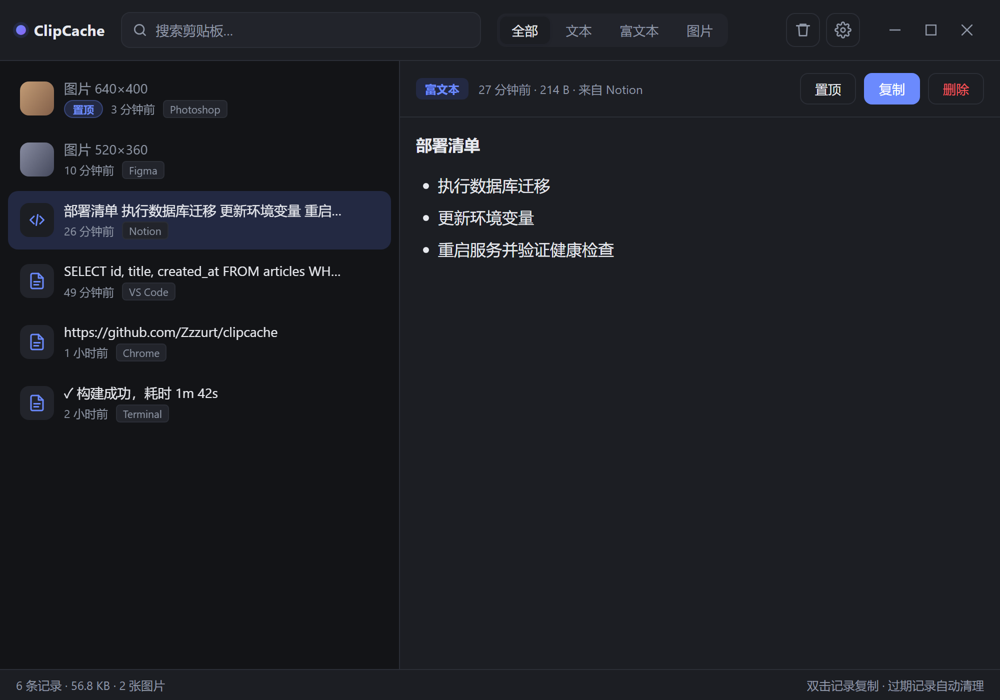

ClipCache 界面改版：从「工具界面」到「安静的纸」
剪贴板管理器是每天扫一眼就走的工具，界面应当退后一步。这版把旧版的蓝色主色、胶囊过滤器、卡片阴影全部拿掉， 改用暖中性纸底 + 单一赤陶橙强调色，让层级由排版和发丝线承担，而不是由颜色和装饰承担。
浅色 · 前后对比
1000 × 700 · 2x
改版前 · 蓝色主色 + 胶囊分段过滤器 + 圆角按钮堆叠 + 预览区无排版约束

改版后 · 下划线过滤器 + 选中态橙竖条 + 660px 阅读栏 + 油墨实心主按钮
深色 · 前后对比
暖黑而非冷灰
改版前 · 冷灰 #131417，蓝色强调压在深底上发灰、对比不足

改版后 · 暖黑 #100f0e 三级层次，强调色提亮到 #e08a5b
三个色系方向
A 赤陶 / B 中性灰 / C 纸感版式、间距、发丝线、图标全部共用同一套，只换色系与质感。三种都能落地，取舍是"这工具想被别人看成什么"。

浅色三选一

深色三选一
赤陶 · 有主张
暖中性底 + 赤陶橙 #b4552e。个性最强，一眼记住，但橙色只占极小面积才不吵。
风险：橙红在中文语境里容易被读成警示色。
中性灰 · 最克制
抽掉全部暖调与彩色，--accent 直接改成石墨 #34343a。零色相，靠底色深浅与竖条标记选中。
代价：小窗里的层级更依赖间距，稍不克制就发灰发平。
纸感 · 最暖
米黄纸底 #f1ebdf + 棕墨 #241f18 + 赭石强调，叠一层 5% 的 feTurbulence 纸纤维。气质最独特，预览标题换成衬线。
风险：纸底会降低对比度余量，深色下尤其要盯 AA 标准。
其余状态
图片预览 / 空态 / 设置
图片预览 · 图注进发丝线分隔的 figcaption，不再是裸露的一块图

设置弹窗 · 452px / 16px 圆角，字段标签 11px 大写字距，自绘开关与下拉
空态 · 46px 描边方章 + 两行说明，替代原来的居中提示块
只用一种彩色
全站唯一彩色是赤陶橙 #b4552e，只出现在选中态、焦点环、置顶标记和富文本 bullet 上。主按钮反过来用油墨黑 #1b1a17，不抢强调色。
发丝线取代阴影
分层靠 1px #e4e1da：列表行之间是缩进的短线（left: 61px，让缩略图一列贯通），区域之间是全宽线。整屏只有弹窗用一处投影。
过滤器改成下划线 tab
「全部 / 文本 / 富文本 / 图片」从胶囊按钮组变成贴在顶栏底边的文字 tab，选中项用 2px 橙色下边线。height: 56px 撑满顶栏，视觉上成为分隔线的一部分。
预览区进阅读栏
正文不再铺满整块画布，而是收进 max-width: 660px 居中的 .sheet，上下留 34 / 56px 呼吸。正文 13.5px / 1.65，列表项用 7px 橙色圆角方块做 bullet。
选中态是竖条，不是色块
选中的行用 9% 透明度的橙底 + 左侧 2px 竖条 + 标题转 #8f3f20。置顶标记从药丸徽章降级成一个 5px 圆点加两个字。
键盘提示常驻状态栏
状态栏右侧固定显示 ↑↓ 浏览 / ↵ 复制 / ⌫ 删除 三组小键帽，左侧是记录数、体积、图片数，用 2px 圆点分隔。
色板
浅色 / 深色#100f0e / #161513 / #262420 / #6b675f / #8f8a80 / #edeae2 / #e08a5b